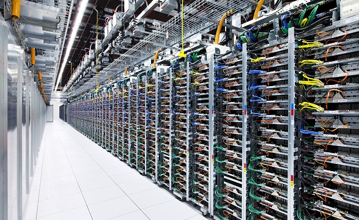

Estrutura
gigantesca
Os data centers são construções altamente planejadas, repletas de servidores, cabos, sistemas de segurança e equipamentos funcionando 24 horas por dia. Toda essa estrutura trabalha em conjunto para armazenar informações, processar dados e manter serviços digitais ativos em tempo real para milhões de pessoas ao redor do mundo.
